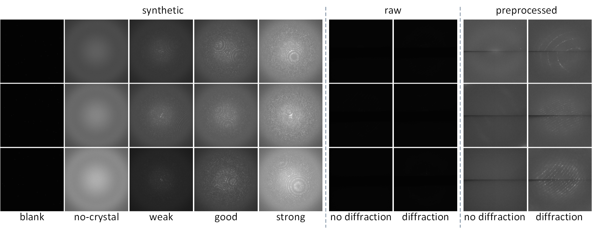

A serial crystallography dataset for developing machine learning models
DiffraNet: A Dataset of Serial Crystallography Diffraction Patterns
DiffraNet is a dataset of serial crystallography diffraction patterns combining over 25000 real and synthetic images.
Crystallography is the science that studies the properties of crystals. It has been a central tool in many disciplines, including chemistry, geology, biology, materials science, metallurgy, and physics, and has led to substantial advances in, for instance, drugs development for fighting diseases. In crystallography, a crystal is irradiated with an X-ray beam that strikes the crystal and produces an image with a diffraction pattern (Figure 1, see this video for more information on crystal diffraction). This diffraction pattern is then used to analyze the crystal’s structure. Serial Crystallography, in turn, refers to a more recent crystallography technique for investigating properties from microcrystals using X-ray free-electron laser.
Recent technological advances have automated crystallography experiments, allowing researchers to generate diffraction images at unprecedented speeds. However, no automated system currently exists to provide real-time analysis of the diffraction images produced, so scientists that have been specifically trained to understand these diffraction patterns have to screen the images manually. This process is not only error-prone but also has the effect of slowing down the overall discovery process. We provide DiffraNet so that researchers can develop automated classification models and accelerate the serial crystallography experimentation pipeline.
The DiffraNet Dataset
DiffraNet is a dataset of serial crystallography diffraction patterns. DiffraNet is composed of 25,000 synthetic and 457 real 512x512 grayscale labeled images. The synthetic images are divided into five classes. Two classes denote images with no diffraction patterns (an undesired outcome) and the other three denote images with varying degrees of diffraction. The real images are divided into two classes, representing images with and without diffraction patterns. DiffraNet contains two variants for the real images: one with the raw images and another with the images preprocessed to make the patterns more visible.
DiffraNet will be continually expanded. In future iterations of the DiffraNet dataset we plan to add new images and new classes that are common place in serial crystallography. For more details on DiffraNet, we refer to our paper.
Baseline Models
Together with DiffraNet, we also provide a suite of baseline models. Our models include standard feature extraction algorithms associated with Random Forests and Support Vector Machines and a novel CNN topology dubbed DeepFreak tailored to DiffraNet. The models were optimized using off-the-shelf AutoML tools. The code for the models and AutoML optimization can be found in our GitHub repository.

References
TBD